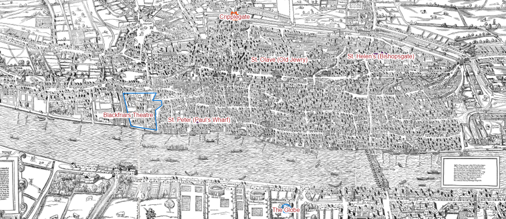

Robert Isham/Isome 1621 - 1662
Robert Isham/Isome 1621 - 1662
Ancestor of Ishams and Isoms in Northamptonshire and Utah
 Robert Isham/Isome 1621 - 1662
Robert Isham/Isome 1621 - 1662
Ancestor of Ishams and Isoms in Northamptonshire and Utah
Robert's father William Isome was born about 1586 and is believed to have grown up in London in the parish of St. Olave, Old Jewry. In 1619, he married Marie Harding in the parish church of St. Peter, Paul's wharf. In 1620, William and Marie moved to Cheshunt where there first daughter was christened.
 William Shakespeare is believed to have lived in London from about 1596 to about 1613. In 1596, Shakespeare lived in St Helen's Bishopsgate. In 1599, Shakespeare lived south of the Thames in Southwark. In 1604, he rented lodgings on the corner of Monkwell and Silver Streets in Cripplegate Ward. On 10th March 1613 William Shakespeare purchased lodgings in Blackfriars. Shakespeare's plays were produced in The Globe theater in Southwark.Here are distances from where William Isome is known to have been, to where William Shakespeare is known to have lived:
In summary, from about 1596 to 1613 William Isome and William Shakespeare probably lived within one mile of each other. Did they bump into each other from time to time? Did William Isome watch Shakespeare's plays at the Globe? It's possible!